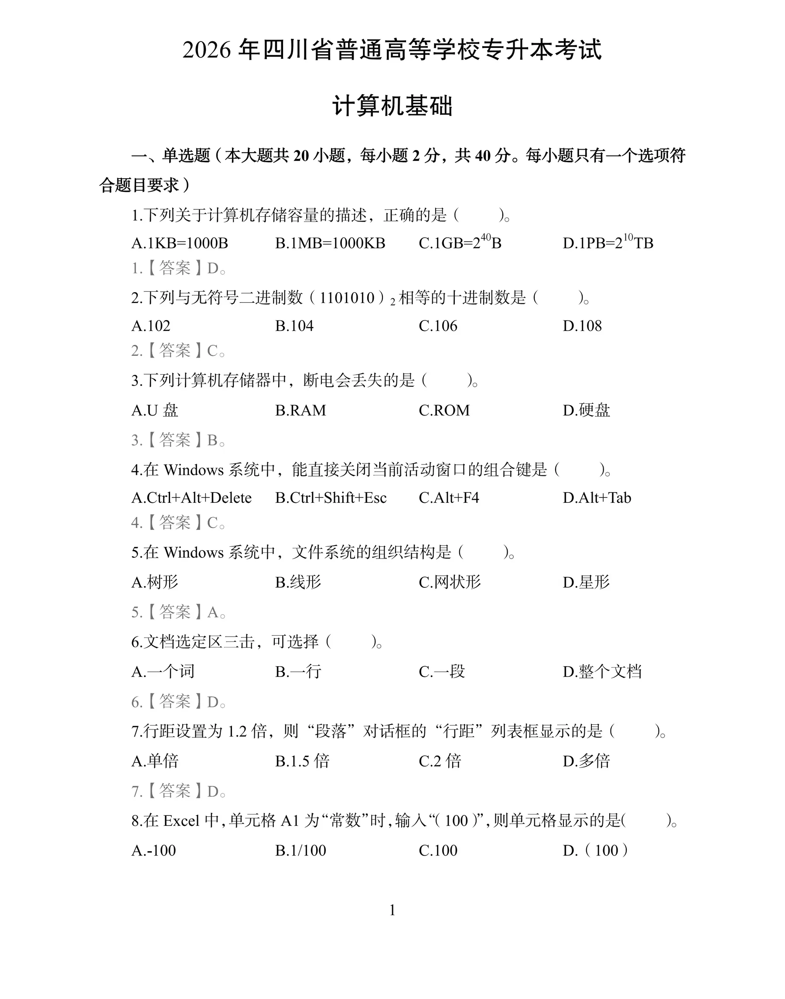
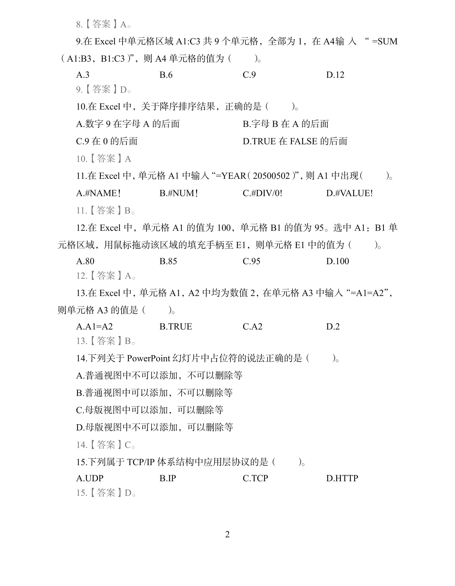
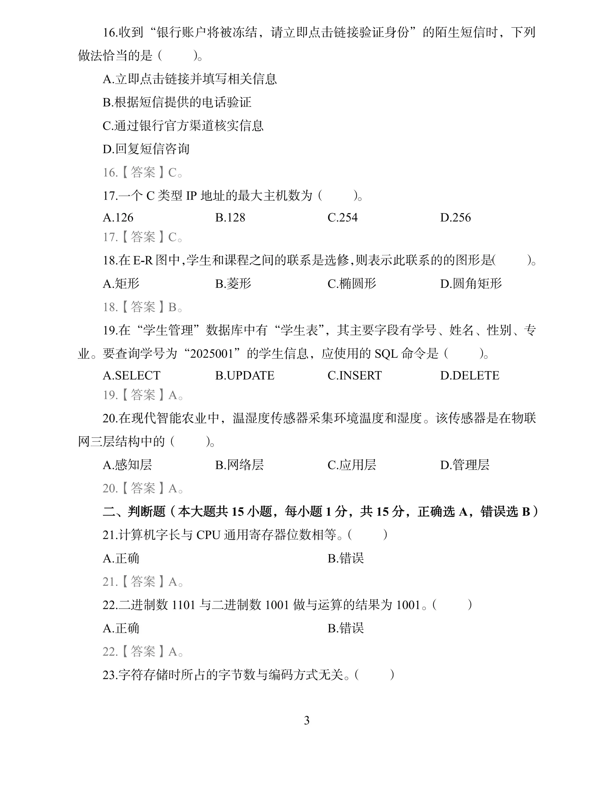
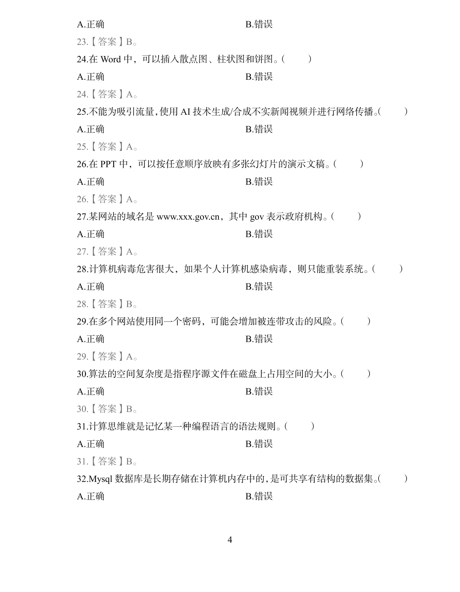
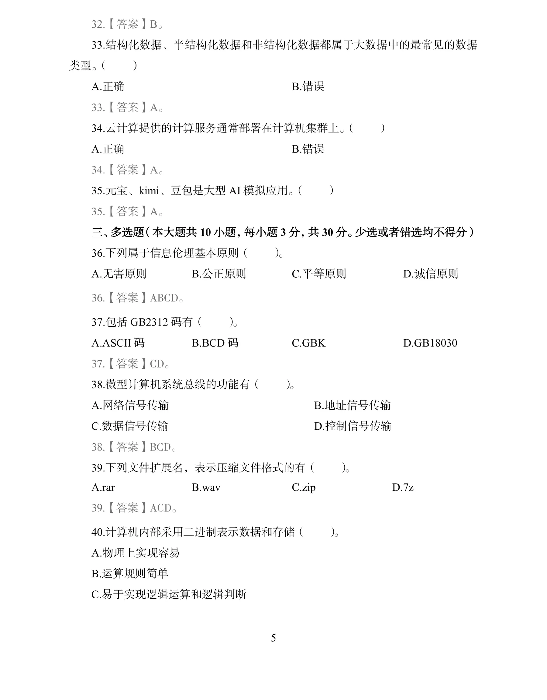
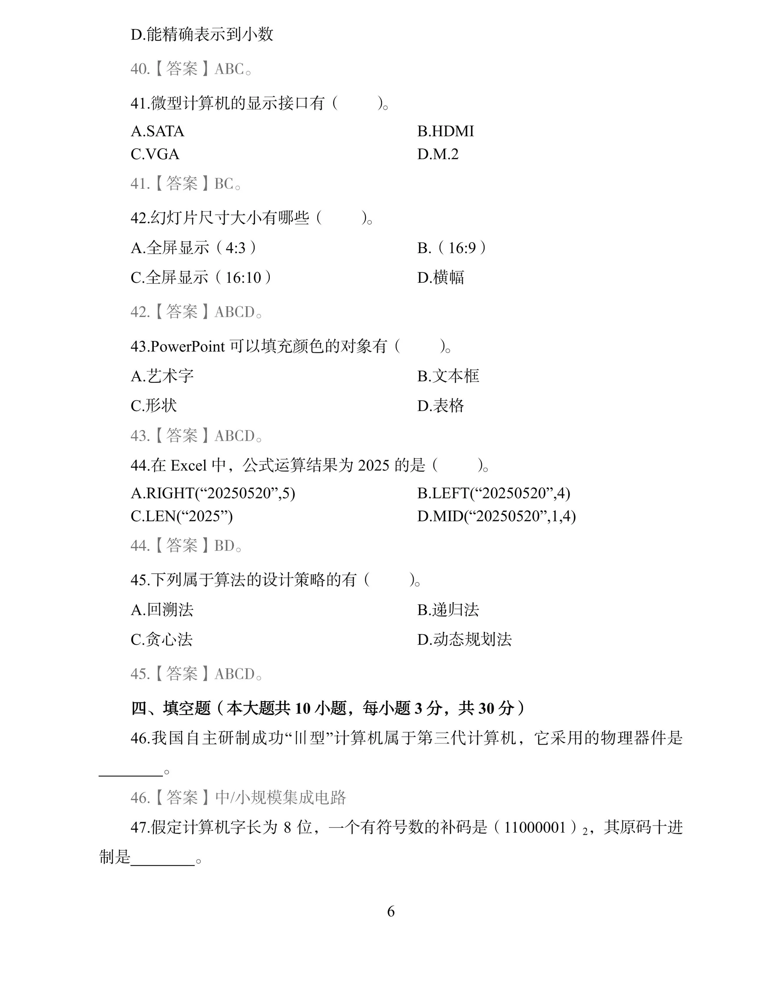
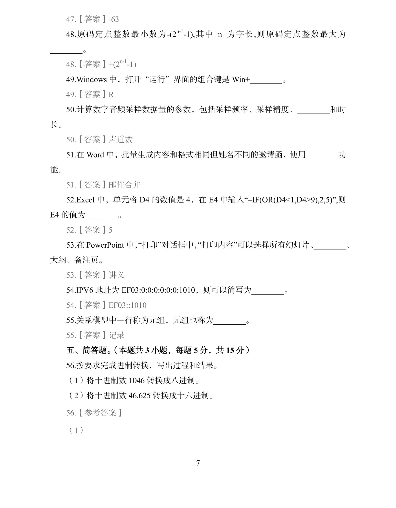
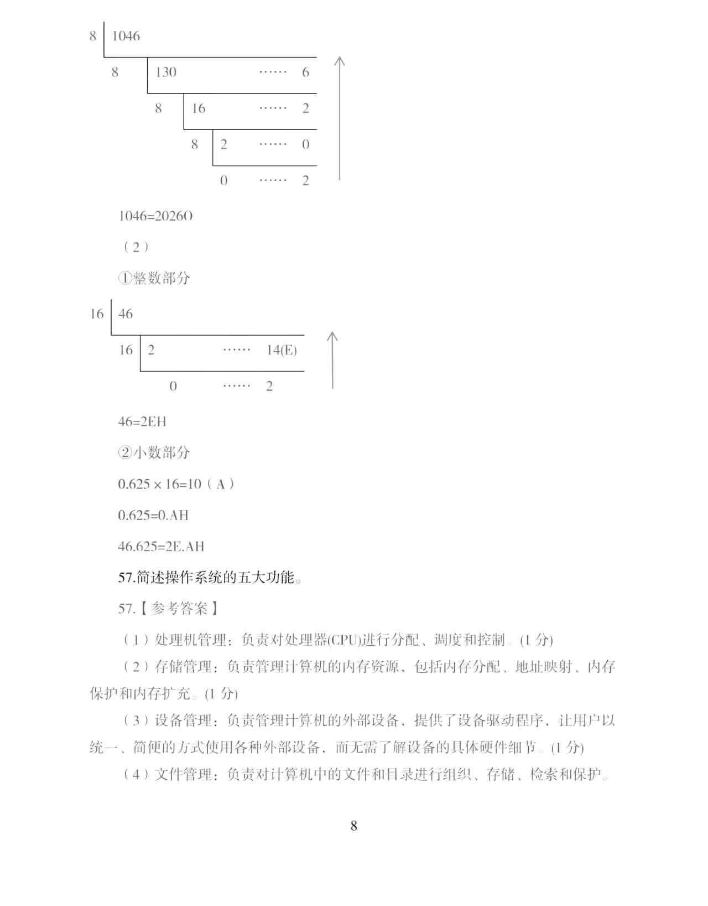
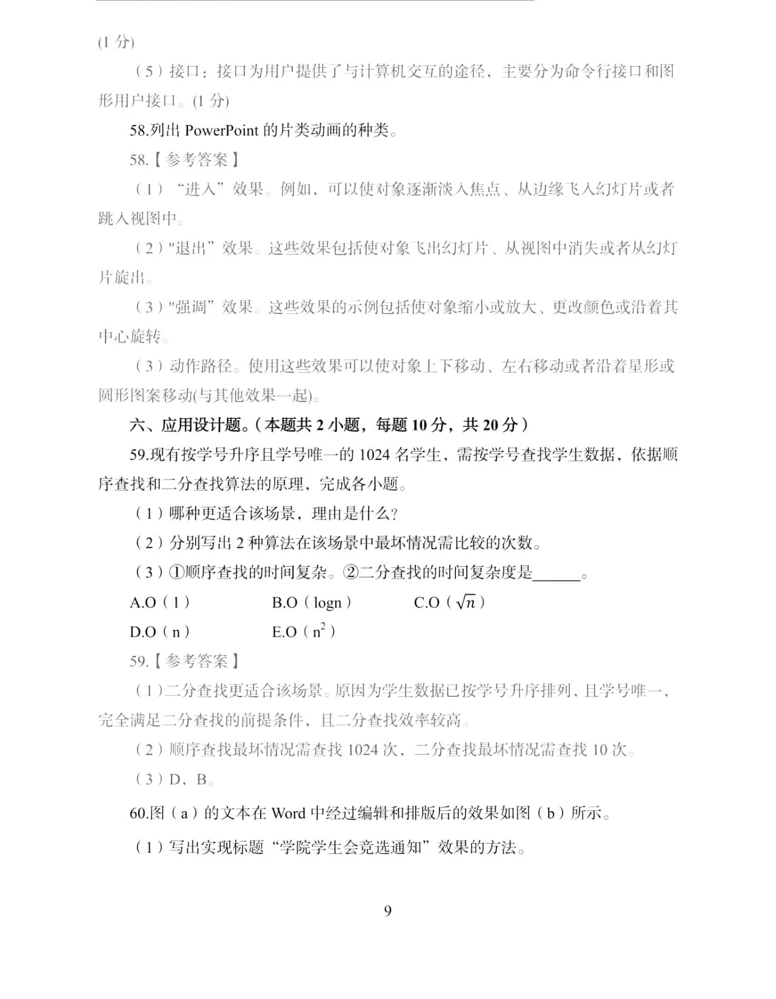
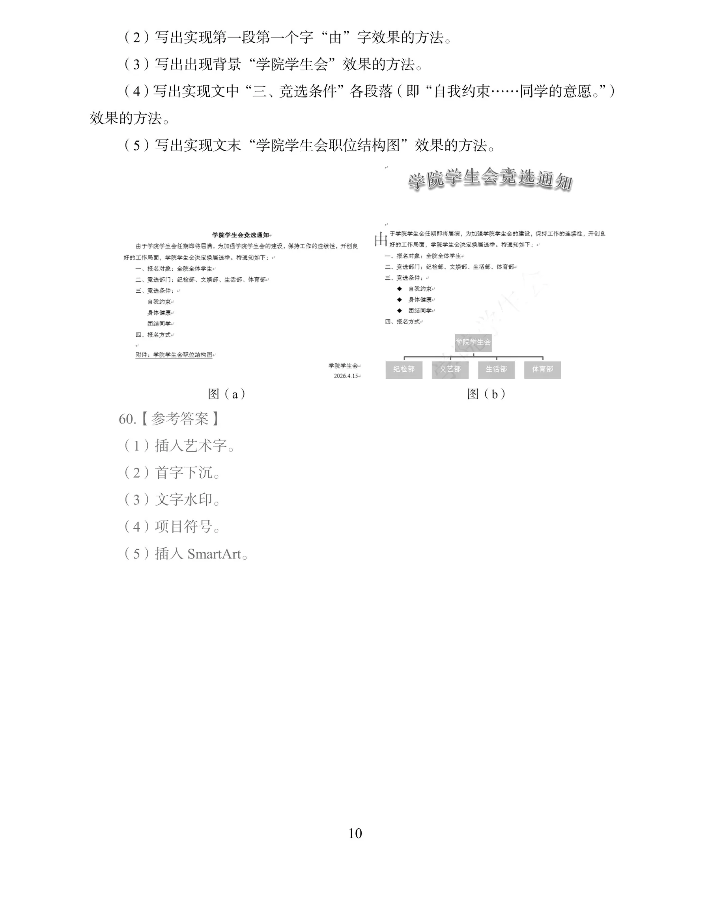

Ⅰ
先确认一件最关键的事：2026 的结构没变
这决定了 2024、2025 真题还能不能接着用| 题型 | 2026 年 | 2025 年 | 结论 |
|---|---|---|---|
| 单项选择题 | 20 题 × 2 分 = 40 | 20 题 × 2 分 = 40 | 完全一致 |
| 判断题 | 15 题 × 1 分 = 15 | 15 题 × 1 分 = 15 | 完全一致 |
| 多项选择题 | 10 题 × 3 分 = 30 | 10 题 × 3 分 = 30 | 完全一致 |
| 填空题 | 10 题 × 3 分 = 30 | 10 题 × 3 分 = 30 | 一致（练习卷含题干） |
| 简答题 | 3 题 × 5 分 = 15 | 3 题 × 5 分 = 15 | 一致（练习卷含题干） |
| 综合应用题 | 2 题 × 10 分 = 20 | 2 题 × 10 分 = 20 | 一致，考办公软件 |
| 合计 | 150 分 / 120 分钟 | 三年零变化 | |
这条结论比任何一道题都值钱：题型、题量、分值连续三年不变，说明这三年题型、题量、分值保持稳定。你按 2024、2025 的题型去练，就是在按 2027 的题型练。多选仍是 10 题 30 分，仍是"少选多选都不得分"。
Ⅱ
2026 考后练习卷 · 60 题
10 页扫描 ｜ 60 题带答案 ｜ 考后整理使用说明：这 10 页是考后整理的 60 题练习卷，题型、题量、分值按四川卷结构编排，题目和答案可以拿来练。遇到题干转写有争议的地方，以第 Ⅲ 节的 15 道重点题和考纲为准。
结构：单选 20×2=40 ｜ 判断 15×1=15 ｜ 多选 10×3=30 ｜ 填空 10×3=30 ｜ 简答 3×5=15 ｜ 综合 2×10=20，共 150 分 / 120 分钟。答案紧跟在每题后面；先遮住答案做，再翻回来核对。










共 10 页；原文件第 11 张是第 1 页重复封面，已剔除。点击任一页可看大图。
答案总表（按题号顺序）
| 题型 / 题号 | 答案 |
|---|---|
| 单选 1—10 | D C B C A D D A D A |
| 单选 11—20 | B A B C D C C B A A |
| 判断 21—35 | A A B A A A A B A B B B A A A |
| 多选 36—45 | ABCD ／ CD ／ BCD ／ ACD ／ ABC ／ BC ／ ABCD ／ ABCD ／ BD ／ ABCD |
| 题号 | 填空答案 |
|---|---|
| 46 | 中、小规模集成电路 |
| 47 | −63 |
| 48 | +(2n−1−1) |
| 49 | R |
| 50 | 声道数 |
| 51 | 邮件合并 |
| 52 | 5 |
| 53 | 讲义 |
| 54 | EF03::1010 |
| 55 | 记录 |
| 题号 | 简答 / 综合参考答案（要点） |
|---|---|
| 56 | 104610 = 20268（除 8 取余，余数倒读：2、0、2、6）；46.62510 = 2E.A16（整数 46=2E；小数 0.625×16=10，即 A）。 |
| 57 | 操作系统五大功能：处理机管理、存储管理、设备管理、文件管理、接口（接口含命令接口与图形用户接口）。 |
| 58 | PowerPoint 四类动画：进入、退出、强调、动作路径。 |
| 59 | （1）二分查找更适合：数据已按学号升序排列且学号唯一，满足二分前提，效率更高。 （2）顺序查找最坏 1024 次；二分查找最坏 10 次（210=1024）。 （3）顺序查找 D. O(n)；二分查找 B. O(log n)。 |
| 60 | （1）插入艺术字；（2）首字下沉；（3）文字水印；（4）项目符号；（5）插入 SmartArt。 |
答案按图文原页转录；判断题 A=正确、B=错误；多选题少选/多选均不得分。
建议这样用：先按 120 分钟闭卷做一遍，对答案只统计“错在哪一章”，不要逐题抄解析；第二遍只做错题，并回到本站对应课时补概念。练习卷的价值是暴露整卷节奏，不是替代 21 课的自测题。
Ⅲ
15 道重点题 · 按知识点归位
考后讲评整理；与练习卷互为参照；最后一列是它对应哪一课| 题号 | 考点与答案 | 归到哪一课 |
|---|---|---|
| 单项选择题（10 道） | ||
| 单选 1 | 存储容量单位换算 → D（1PB = 210TB；1GB 是 230B 不是 240B） | 第一章第 3 课（已写入） |
| 单选 2 | 无符号 (1101010)2 → 106（选 C） | 第一章第 2 课（已写入） |
| 单选 3 | 断电后数据丢失的存储器 → RAM（ROM、U 盘、硬盘都不断电丢数据） | 第二章第 2 课 硬件系统 |
| 单选 4 | 直接关闭活动窗口的快捷键 → Alt + F4（Ctrl+Alt+Del 是任务管理器，Alt+Tab 是切换窗口） | 第二章第 4 课 Windows 操作 |
| 单选 6 | Word 中在左侧选定区三击 → 选定整篇文档（单击一行、双击一段） | 第三章第 1 课 Word 编辑 |
| 单选 7 | 段落行距设为 1.2 倍后，行距框显示"多倍行距"（不是单倍/1.5 倍） | 第三章第 1 课 Word 排版 |
| 单选 9 | A1:C3 每格为 1，A4 输入 =SUM(A1:B3,B1:C3) → 12（重叠的 B1:B3 被算了两次） | 第三章第 4 课 Excel 函数 |
| 单选 11 | =YEAR(20500502) → #NUM!（数值超出 Excel 日期范围） | 第三章第 4 课 Excel 错误值 |
| 单选 13 | 幻灯片中占位符在哪设置 → 幻灯片母版 | 第三章第 6 课 PowerPoint |
| 单选 17 | C 类 IP 地址最大主机数 → 254（28−2，减去全 0 与全 1） | 第四章第 2 课 IP 地址 |
| 判断题（4 道） | ||
| 判断 2 | 两个二进制数做逻辑与，题面给出结果 1001 → 判断正确（0 与任何数相与为 0） | 第一章第 2 课 二进制运算 |
| 判断 3 | "字符占用的字节数与其编码方式无关" → 错（英文 1B、汉字 2B 或 3B，正是编码决定的） | 第一章第 3 课（已写入） |
| 判断 27 | "计算机感染病毒只能重装系统" → 错（杀毒软件通常就能处理） | 第四章第 3 课 信息安全 |
| 判断 29 | 利用 AI 合成并传播不实新闻，这一行为被否定 → 判断正确 | 第四章第 3 课 信息素养 |
| 多项选择题（1 道） | ||
| 多选 | 计算机采用二进制的原因 → ABC；D"能精确表示所有小数"错（0.6 转二进制无限循环） | 第一章第 2 课（已写入） |
这 15 道是考后讲评中的客观题片段；练习卷的填空、简答、综合应用题见第 Ⅱ 节。已在课的"2026 真题"小节里写入的，标了"已写入"。
Ⅳ
从这 15 道重点题整理的 5 个命题特点
这些特点只针对这 15 道题，不当作 2027 的押题结论| # | 特点 | 证据与应对 |
|---|---|---|
| 1 | 送分题改成"四选项四坑" | 2026 单选第 1 题存储单位，A/B 把 1024 写成 1000，C 把 GB 的指数写成 240，D 才对。应对：每个单位的指数都要能自己推，不能只背一句"1024" |
| 2 | 概念题用"听起来对"的假项钓鱼 | 多选里加一条"能精确表示所有小数"，四个理由背得再熟也会栽。应对：背概念时同步背"哪条常见说法是错的" |
| 3 | 判断题盯绝对词 | "只能重装系统""与编码方式无关"——"只能/无关/只由"出现就高度可疑 |
| 4 | Excel 仍是主战场，且考函数边界 | SUM 重叠区域算两次、YEAR 超范围报 #NUM!。应对：函数不只要会算，还要知道它在什么情况下报什么错 |
| 5 | 细节考点往"操作后果"靠 | 行距 1.2 显示"多倍行距"、占位符改母版。应对：Office 别记菜单位置，记"操作→结果" |
一句话总结 2026：题不难，但"背了就会"的比例在下降，"懂了才不会错"的比例在上升。所以只背结论、不核对操作后果，遇到换问法的题就容易失分。
Ⅴ
15 道重点题 + 60 题练习卷怎么用
先当重点样本，再当整卷练习六步用法：
① 先按课学完第一章第 2、3 课，把这 4 道当场做掉（已写进课里）；
② 第二、三、四章学到对应课时，再回头做那几道，检验"是不是真懂"；
③ 全部学完后，先按 120 分钟闭卷做第 Ⅱ 节 60 题练习卷，再把这 15 道遮住答案重做一遍，要求 100% 正确——它们是考后重点题样本，必须能独立做出来；
④ 每道错题写一句"错在哪一步"，不写"粗心"；
⑤ 对照第 Ⅳ 节的 5 个命题特点，检查自己的复习方式有没有踩空；
⑥ 把这页和第 1 课的"历年真题"互相对照：同一个考点连续出现，说明它是稳定考点，值得重点复盘。
① 先按课学完第一章第 2、3 课，把这 4 道当场做掉（已写进课里）；
② 第二、三、四章学到对应课时，再回头做那几道，检验"是不是真懂"；
③ 全部学完后，先按 120 分钟闭卷做第 Ⅱ 节 60 题练习卷，再把这 15 道遮住答案重做一遍，要求 100% 正确——它们是考后重点题样本，必须能独立做出来；
④ 每道错题写一句"错在哪一步"，不写"粗心"；
⑤ 对照第 Ⅳ 节的 5 个命题特点，检查自己的复习方式有没有踩空；
⑥ 把这页和第 1 课的"历年真题"互相对照：同一个考点连续出现，说明它是稳定考点，值得重点复盘。
一句话：15 道重点题用来校准方向，60 题练习卷用来练整卷节奏；真正决定分数的，还是每课那 10～14 道自测题有没有全部做对。